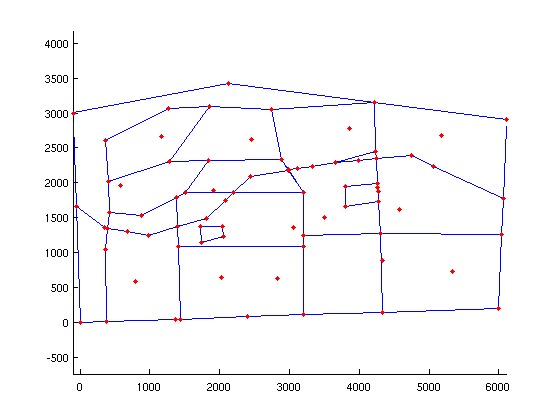
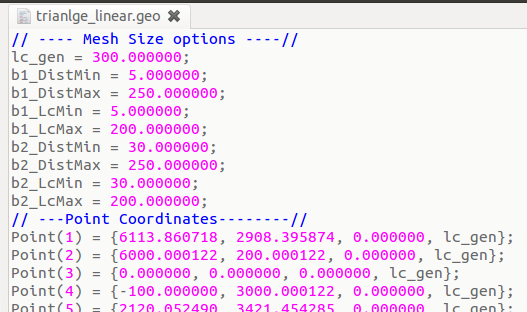
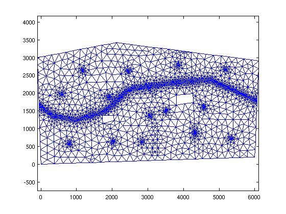

Mesh Generation from Shapefiles using Matlab only
| main | Tutorials | Functions | website |
To create mesh from ArcGIS shapefiles you will need mapping toolbox license. However if you dont have the license you can still follow this tutorial as we have converted the data from shapefile to matlab variables.
The hypothetical domain is shown in the following figure. The domain consist of a polygon shapefile describing the domain, a polygon shapefile describing the properties of different landuses, a line shapefile that discribes the streams and a point shapefile for the wells.

The shapefile data are under the mSim/html_help/DATA directory
We assume that you have the mapping toolbox license. If you are not sure you can check the outcome of the license function.
license('test','map_toolbox')
ans =
1
If you have mapping toolbox license then reading shapefiles is straightforward. First we will read the domain: (note that you need to change the msim_root path)
msim_root='/home/giorgos/Documents/mSim_code/msim/'; dom = shaperead([msim_root 'html_help/DATA/domain.shp'])
dom =
Geometry: 'Polygon'
BoundingBox: [2x2 double]
X: [1x19 double]
Y: [1x19 double]
Id: 0
poly_area: 1.8652e+07
The dom variable is actually a struct with several fields. The important fields for mSim are the "Geometry" and the "X" and "Y" which containts the coordinates of the polygon.
Next we will read the landuse:
landuse = shaperead([msim_root 'html_help/DATA/landuses.shp'])
landuse =
12x1 struct array with fields:
Geometry
BoundingBox
X
Y
Id
Q_rch
poly_area
Q_m3_day
In addition to the standard fields we see that this shapefile contains information about the recharge. The field "Q_rch" is the groundwater rechagre in m/day and the "Q_m3_day" is the total recharge in m^3/day from each field.
In similar way we can read the streams and the wells. Each shapefile has a flow rate field. However this example is about creating a mesh from shapefiles so we will not make use of them.
streams = shaperead([msim_root 'html_help/DATA/streams.shp'])
streams =
6x1 struct array with fields:
Geometry
BoundingBox
X
Y
Id
Q
length
wells = shaperead([msim_root 'html_help/DATA/wells.shp'])
wells =
14x1 struct array with fields:
Geometry
X
Y
Id
Q
If the mapping toolbox is not available, we have saved all these variables and can be loaded with load([msim_root 'html_help/DATA/shapefile_data.mat'])
Typically we expect steep hydraulic head gradient near the streams and wells, therefore we want to instruct Gmsh to refine the mesh around these features. To do so we have to add 4 fields to these shapefiles. The description of the fields can be found in t10.geo example. (If the link is broken search for the tutorial 10 in Gmsh documentation). In short here we request the minimum element length to be ~30 m near the feature and a linear increase up to 100 m element lenght after 250 m distance.
for i = 1:size(streams,1) streams(i,1).DistMin = 30; streams(i,1).DistMax = 250; streams(i,1).LcMin = 30; streams(i,1).LcMax = 200; end
Similarly for the wells, although we now request finer mesh around the wells compared to the streams.
for i = 1:size(wells,1) wells(i,1).DistMin = 5; wells(i,1).DistMax = 250; wells(i,1).LcMin = 5; wells(i,1).LcMax = 200; end
Now the workflow is similar to the previous example. First we create a constructive solid geometry (CSG) object from the shapefiles. Next we write the Gmsh input file. Then we run Gmsh and finally we read the mesh.
To create the CSG object we call the constructor CSGobj_v2 ( The choice of the parameters is not important. They are used to allocate matrices. However if the actual matrices are larger than the allocated ones then the dynamic allocation will make the function significantly slower).
aquif = CSGobj_v2(2,20,200,500,1) % Dim, Npoly, Nline, Npoints, usertol
aquif =
CSGobj_v2
Properties:
PL: [1x1 PolySet_v2]
LS: [1x1 LineSet_v2]
PS: [1x1 PointSet_v2]
tol: 1
dummy: []
The aquif object is empty. We have just allocated space for it. Next we will add data to it. We always read first the domain outline.
aquif = aquif.readshapefile(dom);
Using the same method we read all shapefiles. To choose the order in which the features need to be read you should keep in mind the following: The points of the last feature which are closer than the user tolerance to points already existing from previous features will be snapped and as a result the geometry of the last feature will be slightly altered.
aquif = aquif.readshapefile(landuse); aquif = aquif.readshapefile(streams); aquif = aquif.readshapefile(wells);
Anytime we can plot the CSG object
aquif.plotCSGobj;
axis equal
 Next we define the general mesh options. The function msim_mesh_options returns a struct with the default options. We will change here the following fields. If we want quadratic elements we can change the el_order field to 2;
meshopt=msim_mesh_options; meshopt.lc_gen = 300; meshopt.embed_points = 1; meshopt.embed_lines = 1;
The next step is to create the Gmsh input file using the method .writegeo. This will create a xxxxx.geo file.
aquif.writegeo('triangle_linear',meshopt);
The following figure shows the first lines of the triangle_linear.geo file. The file is written in sections and the first section always contain the options about the mesh size. For example the parameter lc_gen is set equal to 300 and then there are two groups of the 4 parameters we set above which correspond to the wells (b1* group) and the streams (b2* group). Note that the order which these group are listed is random. If one wants to change the parameters do not need to recreate the file from Matlab but can change the values directly in the *.geo file. This is very handy in very complex domains where writing the *geo file is time consuming and in cases where someone wants to create interactively many meshes for the same geometry.

Finally to generate the mesh we call the method .runGmsh
gmsh_path='/usr/bin/gmsh'; aquif.runGmsh('triangle_linear',gmsh_path,[])
Info : Running '/usr/bin/gmsh triangle_linear.geo -2' [1 node(s), max. 1 thread(s)] Info : Started on Fri Apr 4 13:16:23 2014 Info : Reading 'triangle_linear.geo'... Info : Done reading 'triangle_linear.geo' Info : Meshing 1D... Info : Meshing curve 1 (Line) Info : 14 points found in points clouds (0 edges) Info : 552 points found in points clouds (19 edges) Info : Meshing curve 2 (Line) Info : Meshing curve 3 (Line) Info : Meshing curve 4 (Line) Info : Meshing curve 5 (Line) Info : Meshing curve 6 (Line) Info : Meshing curve 7 (Line) Info : Meshing curve 8 (Line) Info : Meshing curve 9 (Line) Info : Meshing curve 10 (Line) Info : Meshing curve 11 (Line) Info : Meshing curve 12 (Line) Info : Meshing curve 13 (Line) Info : Meshing curve 14 (Line) Info : Meshing curve 15 (Line) Info : Meshing curve 16 (Line) Info : Meshing curve 17 (Line) Info : Meshing curve 18 (Line) Info : Meshing curve 19 (Line) Info : Meshing curve 20 (Line) Info : Meshing curve 21 (Line) Info : Meshing curve 22 (Line) Info : Meshing curve 23 (Line) Info : Meshing curve 24 (Line) Info : Meshing curve 25 (Line) Info : Meshing curve 26 (Line) Info : Meshing curve 27 (Line) Info : Meshing curve 28 (Line) Info : Meshing curve 29 (Line) Info : Meshing curve 30 (Line) Info : Meshing curve 31 (Line) Info : Meshing curve 32 (Line) Info : Meshing curve 33 (Line) Info : Meshing curve 34 (Line) Info : Meshing curve 35 (Line) Info : Meshing curve 36 (Line) Info : Meshing curve 37 (Line) Info : Meshing curve 38 (Line) Info : Meshing curve 39 (Line) Info : Meshing curve 40 (Line) Info : Meshing curve 41 (Line) Info : Meshing curve 42 (Line) Info : Meshing curve 43 (Line) Info : Meshing curve 44 (Line) Info : Meshing curve 45 (Line) Info : Meshing curve 46 (Line) Info : Meshing curve 47 (Line) Info : Meshing curve 48 (Line) Info : Meshing curve 49 (Line) Info : Meshing curve 50 (Line) Info : Meshing curve 51 (Line) Info : Meshing curve 52 (Line) Info : Meshing curve 53 (Line) Info : Meshing curve 54 (Line) Info : Meshing curve 55 (Line) Info : Meshing curve 56 (Line) Info : Meshing curve 57 (Line) Info : Meshing curve 58 (Line) Info : Meshing curve 59 (Line) Info : Meshing curve 60 (Line) Info : Meshing curve 61 (Line) Info : Meshing curve 62 (Line) Info : Meshing curve 63 (Line) Info : Meshing curve 64 (Line) Info : Meshing curve 65 (Line) Info : Meshing curve 66 (Line) Info : Meshing curve 67 (Line) Info : Meshing curve 68 (Line) Info : Meshing curve 69 (Line) Info : Meshing curve 70 (Line) Info : Meshing curve 71 (Line) Info : Meshing curve 72 (Line) Info : Meshing curve 73 (Line) Info : Meshing curve 74 (Line) Info : Meshing curve 75 (Line) Info : Meshing curve 76 (Line) Info : Meshing curve 77 (Line) Info : Meshing curve 78 (Line) Info : Meshing curve 79 (Line) Info : Meshing curve 80 (Line) Info : Meshing curve 81 (Line) Info : Meshing curve 82 (Line) Info : Meshing curve 83 (Line) Info : Meshing curve 84 (Line) Info : Meshing curve 85 (Line) Info : Done meshing 1D (0.264017 s) Info : Meshing 2D... Info : Meshing surface 1 (Plane, Delaunay) Info : Done meshing 2D (0.080005 s) Info : 2554 vertices 5593 elements Info : Writing 'triangle_linear.msh'... Info : Done writing 'triangle_linear.msh' Info : Stopped on Fri Apr 4 13:16:23 2014
The last command created a triangle_linear.msh file. We can read the mesh using the function read_2D_Gmsh
[p MSH]=read_2D_Gmsh('triangle_linear');
Reading points... Reading Elements...
Since the mesh consist of linear triangles and it is relatively small, we can visualize it with Matlab functions
clf
triplot(MSH(3,1).elem(1,1).id, p(:,1), p(:,2))
axis equal
